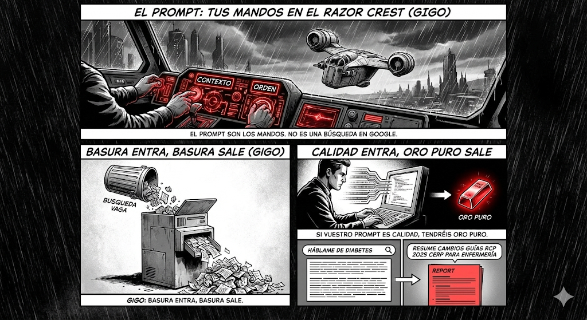
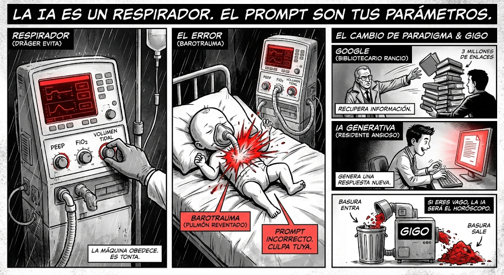

Versión Lite (Corta)
Si la IA es el Razor Crest (una nave de Star Wars para quién no sea friki), el Prompt son los mandos.
Un prompt no es una búsqueda en Google.
Google: Le tiras palabras clave ("Dosis adrenalina PCR") y te devuelve una lista de lectura.
Prompt: Le das contexto y una orden ("Actúa como enfermera de urgencias. Calcula la dosis para un paciente pediátrico de 20kg...").
La Regla de Oro Informática: GIGO En mi mundo friki decimos: Garbage In, Garbage Out (Basura entra, Basura sale). Si vuestro prompt es vago ("Háblame de diabetes"), la IA os soltará un rollo digno de la Wikipedia. Si vuestro prompt es calidad ("Resume los cambios en las guías RCP 2025 del CERP para enfermería"), tendréis oro puro.

Versión extendida
Si la IA es un Respirador de última generación (un Dräger Evita, por poner nombre), el Prompt son los parámetros ventilatorios (PEEP, FiO2, Volumen Tidal).
El respirador es una máquina maravillosa capaz de mantener vivo a alguien que no puede respirar. Pero la máquina es tonta.
Si tú configuras los parámetros de un jugador de rugby de 120kg para un paciente neonato (Prompt incorrecto), el respirador obedecerá. Soplará con fuerza y le provocará un barotrauma (le reventará el pulmón).
¿La culpa es de la máquina? No, la máquina funcionó perfecto.
¿La culpa es tuya? Sí, por no saber pedirle lo que el paciente necesitaba.
Con la IA pasa lo mismo: es una herramienta potente que puede "reventar" vuestra credibilidad si le pedís un protocolo clínico sin ajustar los parámetros de seguridad.
El Cambio de Paradigma: Del Bibliotecario al Residente
Tenéis que reprogramar vuestro cerebro ahora mismo. Lleváis 20 años "googlreando". Eso aquí no sirve.
Google (El Bibliotecario Rancio): Tú le dices "Sintrom pauta". Google busca en su inmenso archivo y te tira a la cara 3 millones de enlaces. Te dice: "Ahí lo tienes, búscate la vida, léetelo tú". Su trabajo es RECUPERAR información existente.
IA Generativa (El Residente Ansioso): Tú le das un prompt. La IA no busca un documento. La IA GENERA una respuesta nueva, palabra por palabra, basándose en lo que tú le has pedido. Es un acto creativo, no de búsqueda.
GIGO (Garbage In, Garbage Out)
En mi mundo friki esto es sagrado: Basura entra, Basura sale.
La IA es un espejo. Si tú eres vago, la IA será vaga. Si tú eres genérico, la IA será el horóscopo: dirá cosas que suenan bien pero no significan nada. El modelo de lenguaje es perezoso por naturaleza (como algunos alumnos que yo me sé). Siempre intentará darte la respuesta más corta y "promedio" posible para ahorrar energía, a menos que le fuerces a trabajar.
